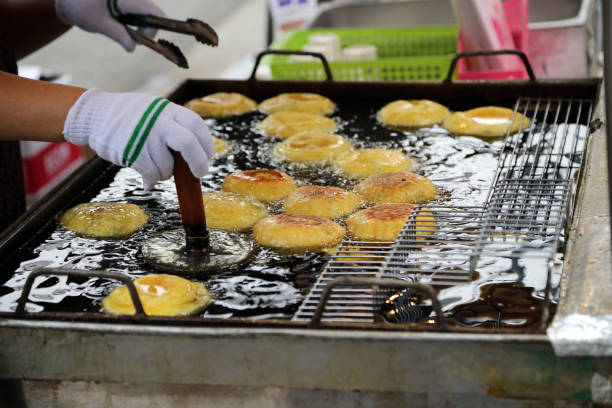

Lugares para Visitar
- Palacio Gyeongbokgung
- Torre N de Seúl
- Mercado de Namdaemun
- Templo Jogyesa
- Palacio Deoksugung
- Nota: para visualizar mas información sobre el lugar y saber la dirección preciona la estrella de color que desees.
Galería de Fotos
